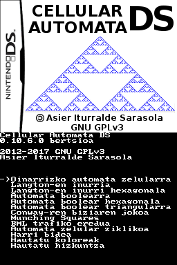
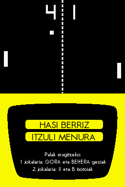

Asier Iturralde Sarasola
@aldatsa

Proiektu pertsonalak
Wikidosia
Twitter eta Telegram-eko bot euskaldun, zintzo eta librea
Programazio lengoaia: JavaScript
wikidosia.aldatsa.eus

Cellular Automata DS
Etxean garatutako Nintendo DSrako automata zelular simulatzailea
Programazio lengoaia: C
aldatsa.eus/cellular-automata-ds

Pong DS
Etxean garatutako Pong-en gisako Nintendo DSrako jokoa
Programazio lengoaia: C++
pongds.aldatsa.eus